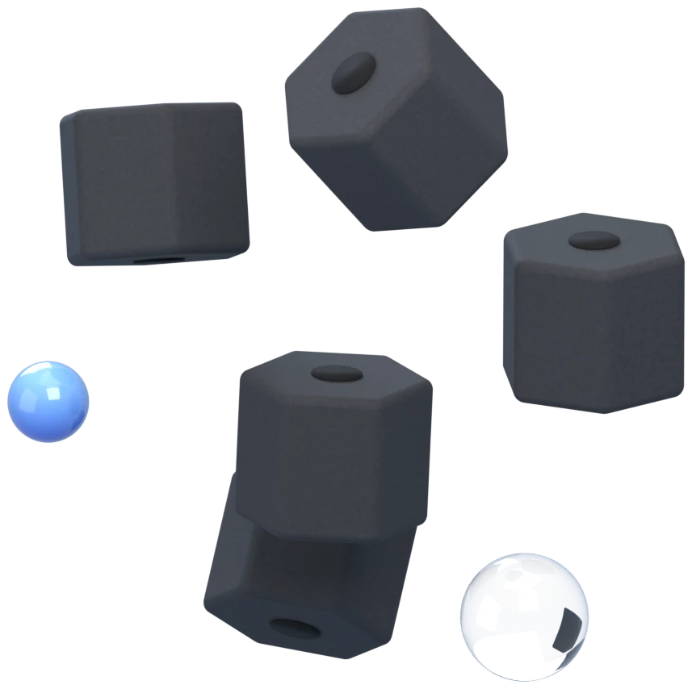
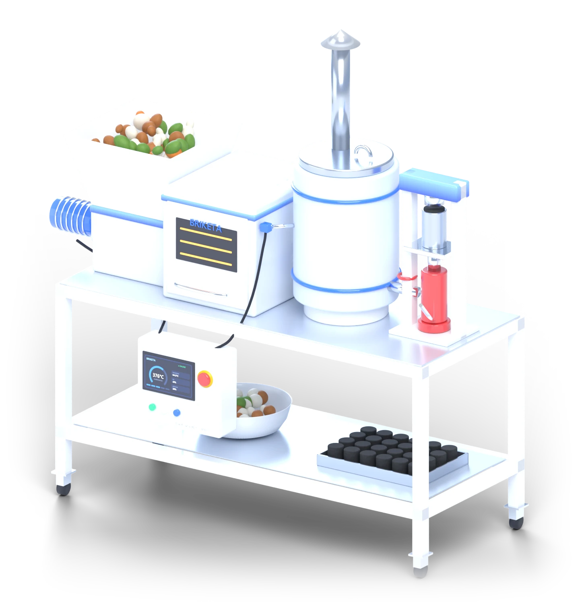
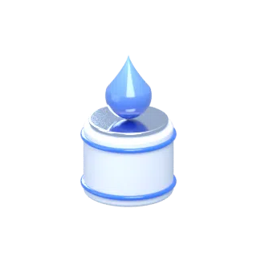
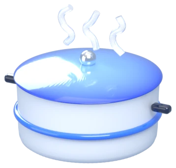
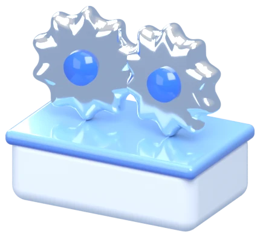
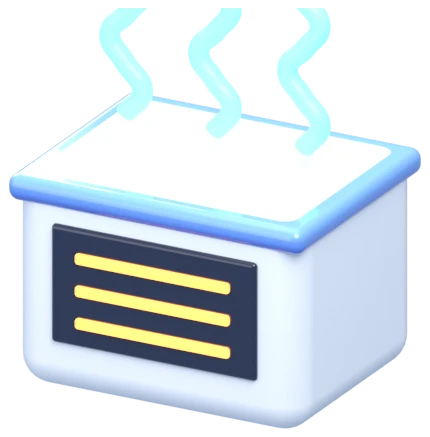
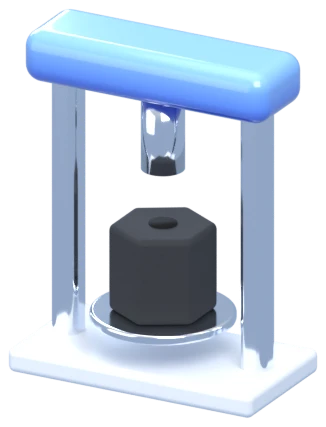
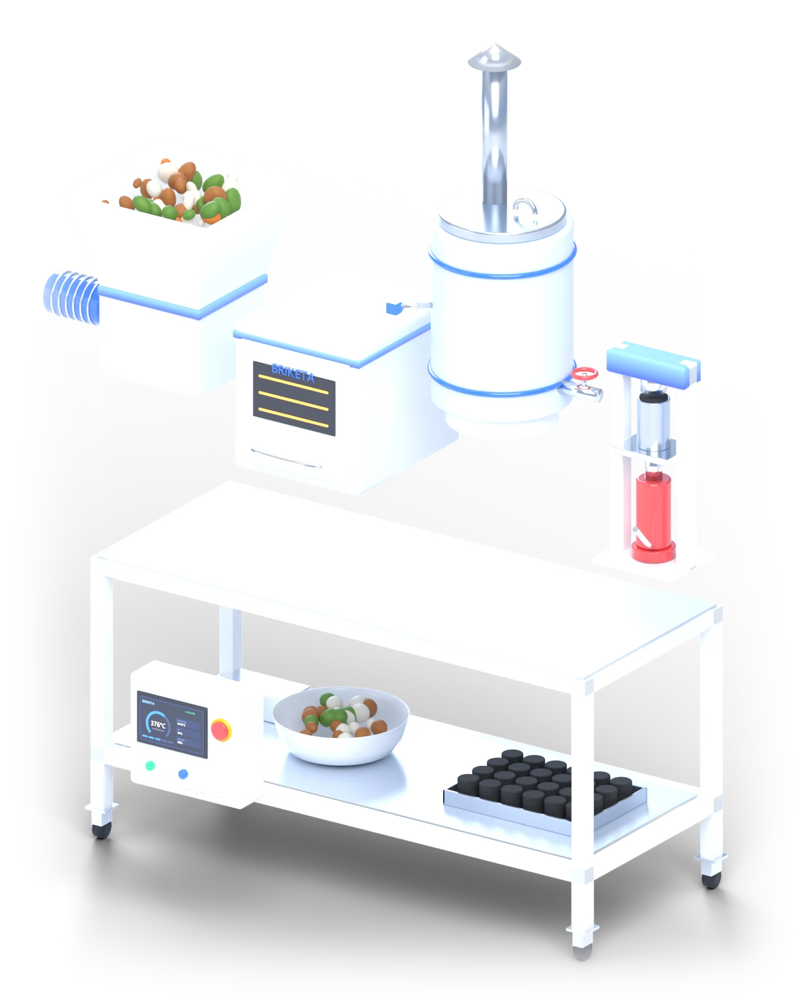
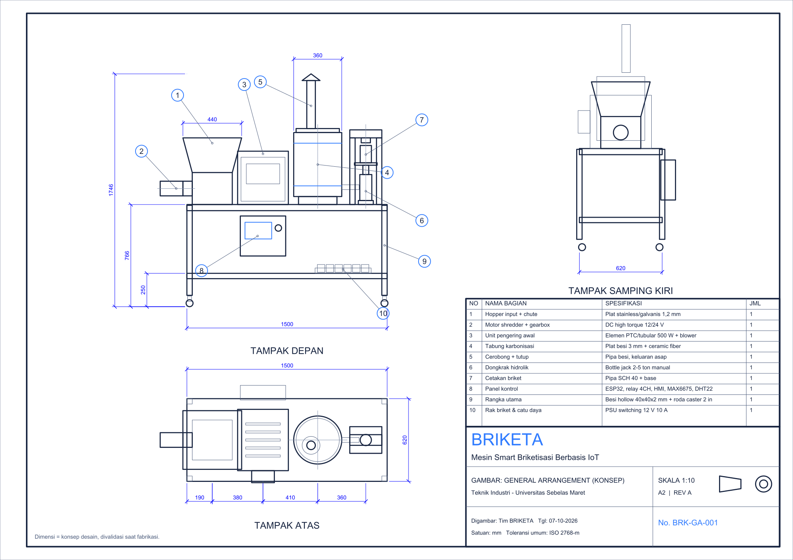
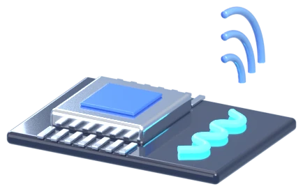

Limbah dapur MBG,jadi briket energi.
BRIKETA adalah mesin smart briketisasi berbasis IoT yang mencacah, mengeringkan, mengarangkan, dan mencetak limbah organik dapur Makan Bergizi Gratis (MBG) menjadi briket bahan bakar — dipantau real-time dari ponsel.



Setiap porsi tersaji,menyisakan limbah organik
Program MBG dimulai 6 Januari 2025, dan setiap dapur MBG ditargetkan menjadi model zero waste. Namun limbah organik hariannya belum terkelola optimal.

Volume harian besar
Sisa bahan makanan, sisa hasil masak, dan sisa makanan yang tidak terkonsumsi menumpuk setiap hari di dapur MBG.
Kadar air tinggi
Sisa nasi, sayur, dan lauk berkadar air jauh lebih tinggi dibanding biomassa kering seperti sekam atau tempurung kelapa, sehingga lebih sulit dijadikan bahan bakar.
Briket belum digarap
Kebijakan yang dirintis baru fokus pada minyak jelantah → SAF dan sampah organik → kompos/biogas. Pemanfaatan menjadi briket belum dikembangkan.
Lima tahap,satu mesin ringkas
Empat unit fungsional bekerja berurutan, dari limbah dapur mentah hingga briket tercetak.

1Pencacahan
Shredder double-shaft bermotor DC high torque memperkecil ukuran limbah.

2Pengeringan awal
Elemen pemanas 500 W dan blower menurunkan kadar air sebelum dikarbonisasi.
Karbonisasi
Tabung pirolisis berinsulasi ceramic fiber, dijaga di rentang optimal.
300–450 °CPencampuran
Arang dicampur perekat tepung tapioka; kelembapan adonan dipantau sensor.
10–20%
5Pencetakan
Dongkrak hidrolik 2–5 ton mengepres adonan ke cetakan silinder.
Satu rangka beroda,empat unit fungsional
Model 3D parametrik (Blender) dan gambar teknik (DXF/LibreCAD) dibangun dari satu file dimensi yang sama. Ketuk titik bernomor untuk melihat tiap komponen.


Sensor di mesin,kendali di genggaman
ESP32 membaca setiap sensor, mengirim data lewat Wi-Fi, dan menerima perintah untuk aktuator.

ESP32Wi-Fi · real-timeSemua yang dibutuhkan operator
Lingkaran ekonomi sirkular,tepat di sumber limbahnya
Briket dapat kembali ke dapur MBG sebagai bahan bakar memasak atau dipasarkan ke UMKM sekitar — menghemat biaya bahan bakar dan pembuangan sampah.
Energi bersih & terjangkau
Sumber energi alternatif dari biomassa limbah.
Konsumsi & produksi bertanggung jawab
Timbulan sampah organik berkurang dan diolah jadi produk bernilai tambah.
Kemitraan untuk mencapai tujuan
Kolaborasi perguruan tinggi, mahasiswa, dan mitra pengelola SPPG/MBG.
Dari rancangan ke uji lab,dalam enam bulan
Dibangun mahasiswa Teknik IndustriUniversitas Sebelas Maret
Fakultas Teknik UNS
Sumber limbah organik harian sekaligus calon pengguna briket
Skema Studi Independen · UNS
Lihat BRIKETA bekerja, secara live.
Buka dashboard untuk memantau mesin secara real-time, atau jelajahi demo dengan data simulasi.